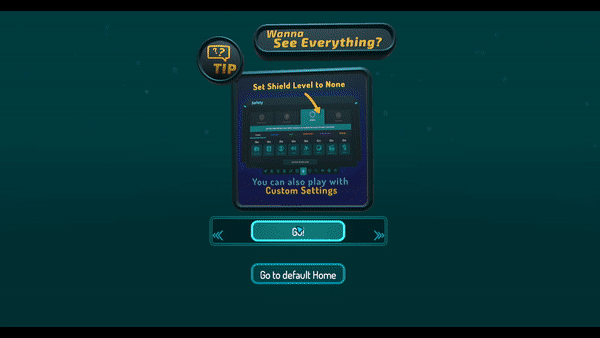
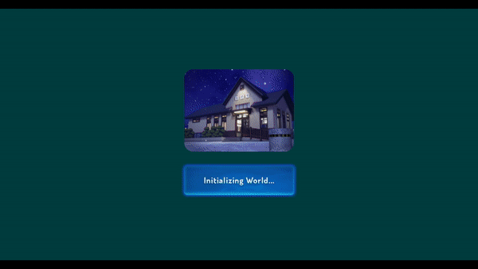

💎 머릿말
본 글은 2023 신년맞이 VRChat 캘린더 투고를 목적으로 작성되었습니다.
💎 VRChat World 로딩 패널

루석바 (23-01-25 기준)

화본역 (23-01-25 기준)
위 두 월드처럼,
월드에 접속하는 동안, 짧은 로딩 화면을 보여주는 방법을 알아봅니다.
※ PC 유저에게만 적용됨 !
부스에서 프리팹을 다운받아 보실 수 있습니다.
💎 원리
월드를 로딩하는 동안,
월드에 배치된 RenderMode가 Overlay인 Canvas가
VRChat의 UI보다 더 우선적으로 보이는 것을 이용합니다.
Overlay Canvas는 VR에서는 보이지 않기 때문에,
로딩 패널은 PC 유저에게만 적용됩니다.
💎 구현
1 - Canvas 만들기
로딩하는 동안 보여지게 될 Canvas를 만들어줍니다.

Hierarchy 창 좌측 상단의 + 버튼을 클릭,
혹은 빈 공간을 우클릭하고,

이후 열리는 창에서 UI/Canvas를 선택해,
새로운 Canvas 오브젝트를 만들어줍니다.

Hierarchy 창에서 새로 만들어진 Canvas 오브젝트를 선택하고,
Inspector 창에서 Canvas Scaler 컴포넌트를 찾아,
UI Scale Mode를 Scale With Screen Size로 변경해줍니다.

이후 컴포넌트에 새로 보이게 되는 Reference Resolution을,
본인이 로딩 패널을 작업할 해상도로 설정해줍니다.
필자는 1920 x 1080 해상도의 모니터를 사용하기에, 편의상 사진처럼 적용시켜주었습니다.
이렇게 Canvas Scaler 컴포넌트를 여럿 설정해주는 이유는,
로딩 패널을 우리가 작업한 해상도 뿐만 아니라,
다른 해상도에서도 비율이 망가지거나 짤리지 않도록 적절하게 보여주기 위함입니다.
Canvas Scaler 의 UI Scale Mode를 Scale With Screen Size로 설정해주고,
Match를 Width에 맞춰주게 되면,
일반적인 특정 해상도를 사용하는 유저가 맵에 접속했을 때,
로딩 패널의 비율이 망가지거나 일부분이 짤리지 않도록,
Reference Resolution에 대해 가로 기준으로 적절하게 비율을 재설정해주게 됩니다.
2 - 로딩 패널 만들고 꾸미기
로딩하는 동안 보여지게될 패널을 만들고 꾸며줍니다.

Canvas를 우클릭하고 나오는 창에서,
UI/Panel을 선택해 새로운 Panel 오브젝트를 만들어줍니다.

키보드 숫자 2, 혹은 Scene 창 좌측 상단에 위치한 2D 버튼을 눌러,
2D 모드로 전환합니다.
이후, 만들어뒀던 Panel 오브젝트를 클릭하여 선택하고,
키보드 F를 눌러 화면 중앙에 Panel 오브젝트가 포커스되도록 합니다.


Game 창 좌측 상단에 위치한 해상도와,
우리가 앞에서 설정한 Canvas Scaler의 Reference Resolution 해상도가 일치하는지 확인합니다.
만약 불일치 하다면,
위 사진들을 참고하여 Reference Resolution과 같은 해상도를 만들어 적용시켜줍니다.

다시 Panel 오브젝트를 클릭하여 선택하고,
Inspector 창에서 Image 컴포넌트를 찾아,
색을 불투명한 검정색으로 바꿔줍니다.
이 친구는 로딩 패널의 배경으로 사용될 것입니다.
위에서, 로딩 패널을 만든 사람이 작업할 당시 사용한 해상도 뿐만 아니라,
일반적인 특정 해상도에서도 화면을 적절하게 보여주기 위해,
Canvas Scaler를 사용하여 비율을 조절해준다고 언급했었는데,
이때 비율을 조정되면서, 화면 가장자리에 투명한 빈 공간이 생길 수 있기 때문에,
이곳을 매꾸기 위한 배경을 만들어주는 것입니다.

이후, 유니티 UI를 이용하여 로딩 패널을 원하는대로 꾸며줍니다.
3 - 간단한 우동 그래프 만들기
맵이 모두 로딩되면, 로딩 패널이 보이지 않아야 할 것입니다.
때문에 맵이 로딩된 이후, 로딩 패널 오브젝트를 비활성화시켜주는 기능이 필요합니다.

Canvas 오브젝트를 선택하고,
Inspector 창을 밑으로 내려 Add Component 버튼을 눌러줍니다.
이후 뜨는 검색창에 Udon 을 입력해 Udon Behaviour 컴포넌트를 찾고 추가해줍니다.

Udon Behaviour에서 New Program 버튼 밑에 있는 선택지가
Udon Graph Program Asset 임을 한 번 확인해주고,
New Program 버튼을 눌러 새로운 우동 그래프 파일을 만들어줍니다.

정상적으로 파일이 만들어졌다면,
Open Udon Graph 버튼을 눌러, Udon Graph 창을 열어줍니다.

위와 같이 우동을 만들어줍니다.
혹은 아래 텍스트를 복사하여, Udon Graph 창에 붙여넣기 하셔도 됩니다.
application/vnd.unity.graphview.elements ALWRz24TMRDGXyWas73a9Xr/RcoBaEEVEiCV5oKile0dRwbHi3a9gWibJ+PQR+IV8JK0qCWHqFLlg2fG9vj7ffP7190IW2EHhPmXEfRg7QexCQlcbtH5+tqLzgOBwTShpllTFWmeUCywoVxzTUWpK5phnktepZqLIlz+3vbGm9bBfISfMKdpEcUEdiHKWBTvCbi2wZuriz78uSKgbfvjmIEqGdeYFbQsM0l5wmJaikrSiiUq7FJyjGF16LCcZP/tsSePpN8443eXbm0cvguVj/IrKh/V9Rp9vX4o1PXJew+wQmCcaeQ0bWQeYPUkigkaM840qlSyip2ATVh5pM3Sp7AAj3GfgowwTJIOQpaHqYxgXO+FU3h1AfOpYe8749bHY4D9ufjX6F8pb7YYwl3vcfO6bS0Kd58u28B9T3/WIP6j/wdPT9Cf4+jt1PVFbCLPeXZwJjo6RWabXrWdNZLMltj1AXzBo3haZPZmsH7ocOFw8J2wZPZpkNao97j73H5Dt5BFITKV5UmVBu/K6vatsD1O41vt/wA=
Start 이벤트는 맵에 접속하자마자 딱 한 번 호출되는 이벤트입니다.
Start 이벤트를 통해, 플레이어가 맵에 접속하는 타이밍을 캐치한 뒤,
Get gameObject 노드와 SetActive 노드를 실행시켜 줄 것입니다.
Get gameObject 노드는 이 우동 그래프가 들어있는 게임 오브젝트를 가져오고,
SetActive 노드로 그렇게 가져온 게임 오브젝트를 비활성화 시켜줍니다.
이런식으로,
맵이 모두 로딩되고 접속하게 되면 Canvas 오브젝트가 비활성화되는 우동 그래프를 만들 수 있습니다.
우동 그래프를 만들거나 수정한 이후에는,
반드시 Udon Graph 창 우측 상단에 위치한 Compile 버튼을 눌러줍시다.
4 - 테스트 해보기
모든 준비가 끝났습니다.
Canvas 오브젝트를 반드시 활성화 시킨채로 맵을 업로드하고,
맵에 접속하여 로딩 패널이 제대로 작동하는지 확인합니다.